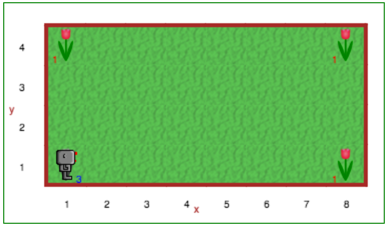

Step 11: If/Else¶
CS20-CP1 Apply various problem-solving strategies to solve programming problems throughout Computer Science 20.
CS20-CP2 Use common coding techniques to enhance code elegance and troubleshoot errors throughout Computer Science 20.
CS20-FP2 Investigate how control structures affect program flow.
CS20-FP3 Construct and utilize functions to create reusable pieces of code.
Tutorial¶
While learning how to program is fun, you should not spend all your
time in front of the computer. When you are at home, if it rains, keep reading, otherwise, go outside and play!
Let’s rewrite the sentence that starts with if above:
if it rains,
keep reading,
otherwise,
go outside and play
If this were Python, we might have written it like this instead:
if it_rains():
keep_reading()
else:
go_outside_and_play()
Yes, Python includes the possibility of more than one choice with
the keyword else. Let’s use it with another example. Reeborg can see
if there’s a wall right in front him, using the function front_is_clear(). This can be used with if/else to write a program that will guide Reeborg around a rectangular world. Something like the following should do the trick:
def move_or_turn():
if front_is_clear():
# something
else:
# something else
repeat 40:
move_or_turn()
Your Turn¶
Open Step 11 on the Reeborg environment.
Reeborg wants to make some bouquets of flowers for it’s friends, Zoe and Eli. Reeborg has permission to take() tulips from some of his neighbor’s yards. Unfortunately for Reeborg, each of the yards is different. Reeborg does know that the yard will be rectangular, that it will take 23 steps to get around the yard, and that there will be a tulip in each corner of the yard.
Create a program to have Reeborg walk around the outside of the yard, picking up a tulip if it can, and moving ahead if it cannot. You must use a repeat 23: and if/else.
Note
For this step, the world will be different each time you press the Play button. Each time you run your code, new dimensions for the world will be used. You may assume the starting location will always be in the lower left hand corner of the world.
If You’re Having Trouble (a more detailed explanation)¶
We have seen how defs and if statements could be thought
of as being (sometimes) equivalent to inserting a code block; the
exception was when the condition of the if statement was False,
in which case we ignored the code block which is equivalent to deleting
it. if/else statements can be thought as inserting one or the other
code block. Thus
move()
if True:
turn_right()
else:
turn_left()
move()
is equivalent to
move()
turn_right()
move()
whereas
move()
if False:
turn_right()
else:
turn_left()
move()
is equivalent to
move()
turn_left()
move()
We can represent this as a flowchart: